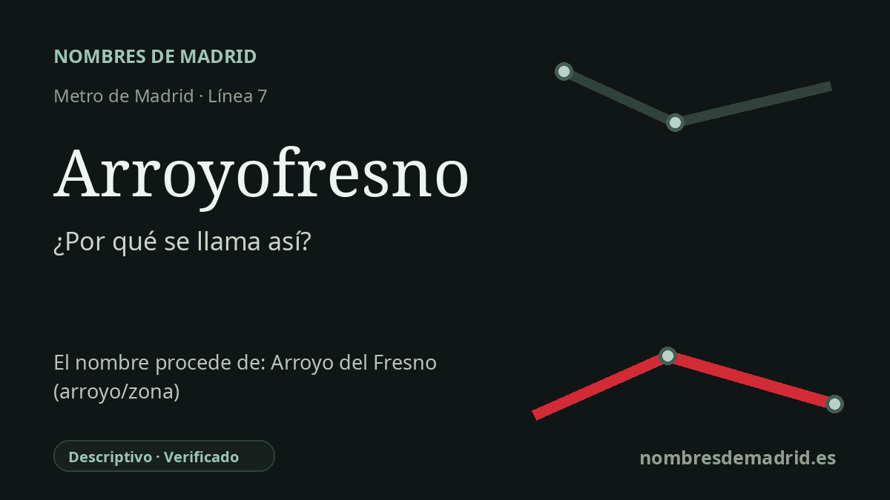

Publicado el · Investigación de Nombres de Madrid · Cómo verificamos cada origen · 10 fuentes consultadas
Respuesta rápida
Arroyofresno toma su nombre del área y del arroyo de Arroyo del Fresno, en Fuencarral-El Pardo. El topónimo remite literalmente a un curso de agua y a un fresno, aunque la grafía unida de la estación es una forma moderna de Metro.
La historia del nombre
Arroyofresno recibe su nombre de Arroyo del Fresno, el área residencial que rodea la estación y el curso de agua más antiguo que dio nombre a esa zona. La grafía oficial de la estación, **Arroyofresno**, une las palabras, pero el topónimo de base es la expresión española transparente **Arroyo del Fresno**.
El nombre es descriptivo. En español, **arroyo** designa un curso de agua pequeño, mientras que **fresno** es un árbol del género *Fraxinus*. Por eso “arroyo del fresno” es una interpretación literal correcta del topónimo, aunque conviene entenderla como explicación lingüística y no como prueba documental de que el cauce estuviera bordeado históricamente por fresnos.
El arroyo no es solo una explicación popular. Los datos geográficos oficiales de España registran **Arroyo del Fresno** como curso natural de agua cerca de la estación y también como nombre de barrio o lugar poblado. Además, un documento urbanístico del ámbito sitúa el Arroyo del Fresno dentro de la cuenca del Manzanares y señala que el cercano Arroyo del Monte Carmelo constituye el origen del Arroyo del Fresno.
La historia del transporte aporta un matiz importante. La estación formaba parte de la ampliación de la línea 7 hacia Pitis en 1999, pero la falta de consolidación urbanística del entorno y la escasa demanda aconsejaron dejarla sin servicio. Abrió finalmente a los viajeros el **23 de marzo de 2019**, como estación número 302 de Metro; las páginas oficiales de transporte la sitúan en la línea 7, con accesos desde la calle de Federica Montseny y la calle Arroyo del Monte.
Las referencias anteriores y la prensa muestran la estación proyectada o cerrada como **Arroyo del Fresno** o **Arroyo Fresno**, mientras que la estación abierta al público utiliza **Arroyofresno**. Por tanto, el origen mejor sustentado es claro: el nombre moderno de Metro remite al topónimo local Arroyo del Fresno, vinculado en última instancia al arroyo. La parte más débil de la explicación previa es la imagen de un cauce bordeado de fresnos, que sigue siendo una inferencia a partir del nombre y no un hecho histórico documentado directamente.